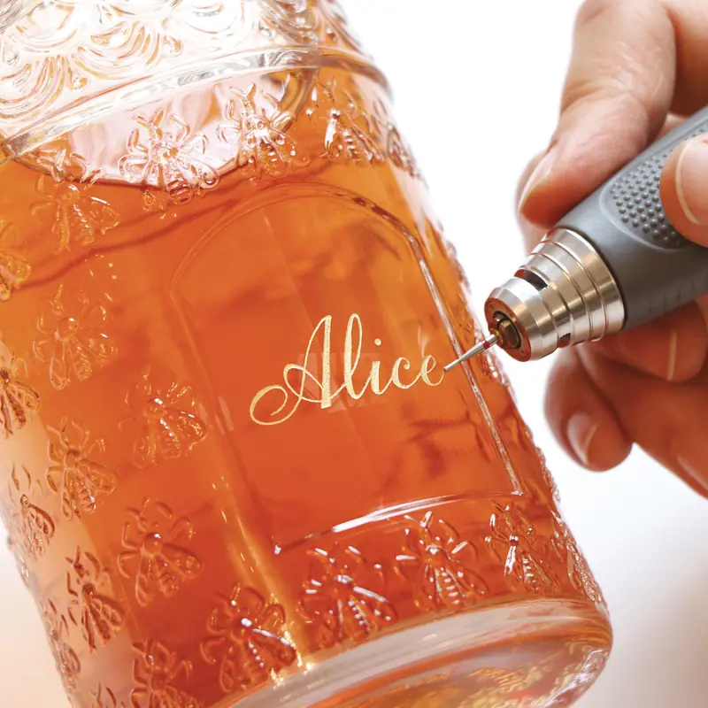
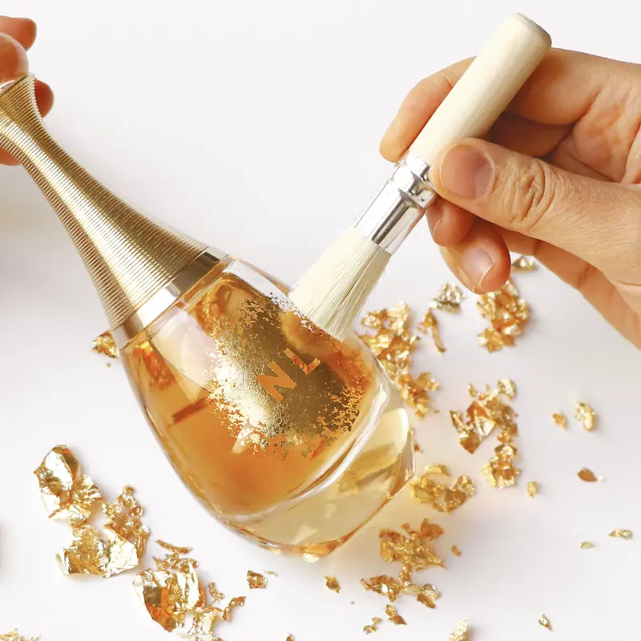
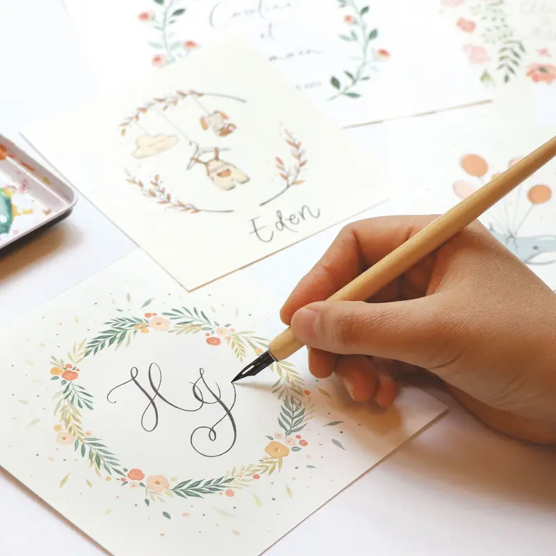
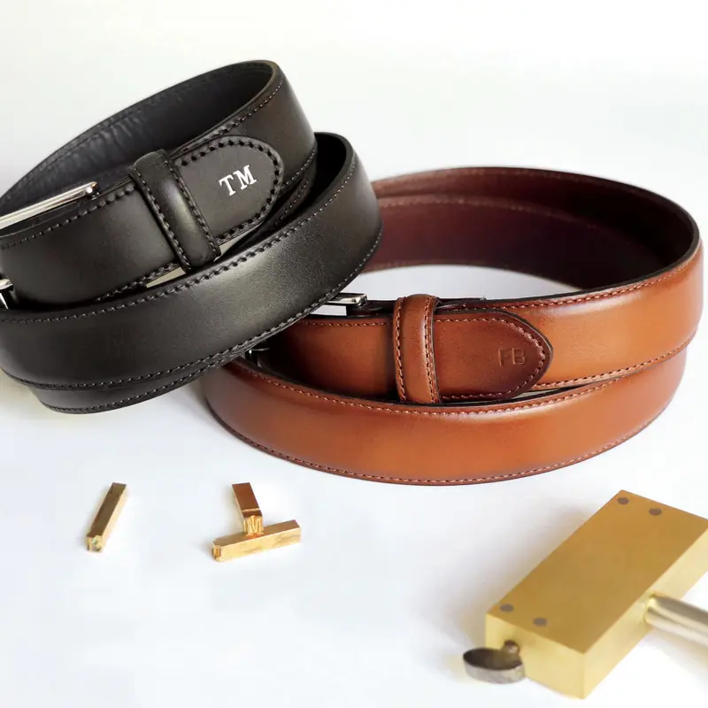
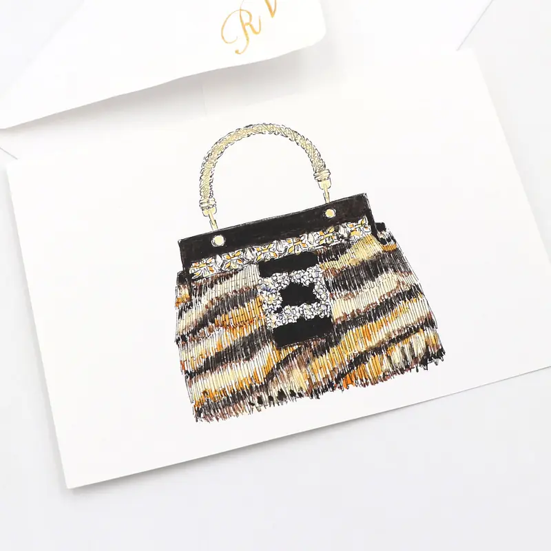
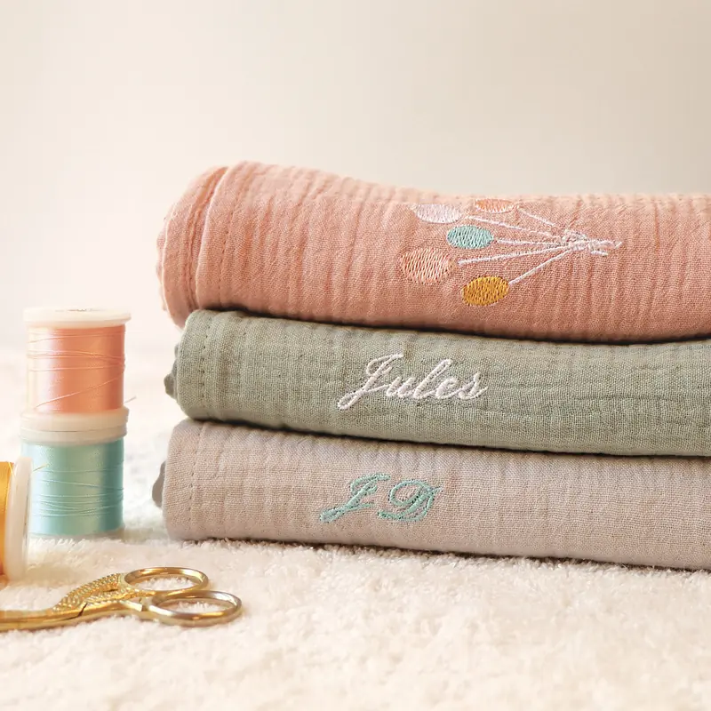
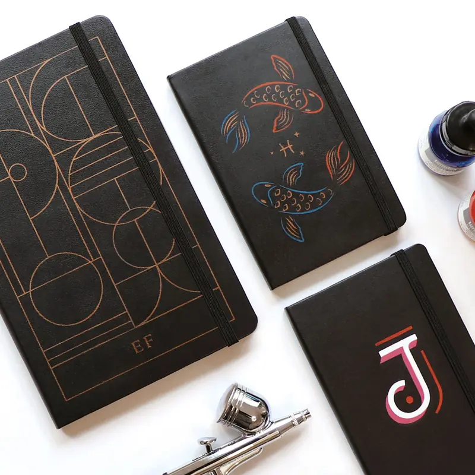
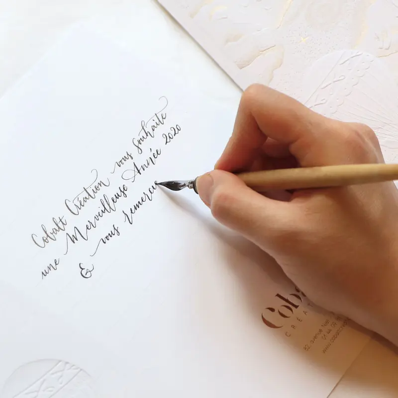
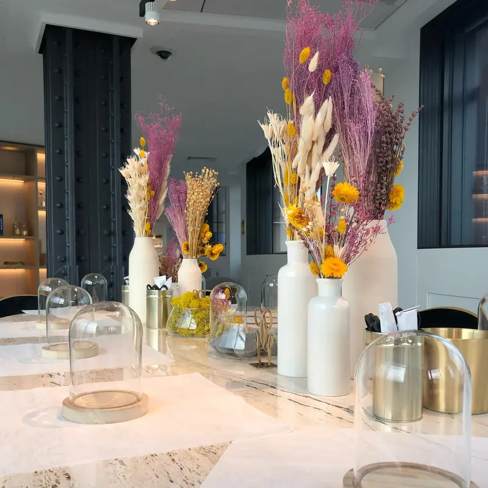

Savoir-faire — Ateliers signatures
Nos ateliers signatures
Des dispositifs déjà éprouvés, immédiatement disponibles, que nous adaptons à votre direction artistique sans repartir d’une page blanche. Chaque geste ci-dessous se déploie seul ou en combinaison.
9 réalisations

La Gravure
Idéale pour sublimer le verre, certains plastiques, la céramique, la laque...
La gravure est réalisée par un artiste à la main.
Nous pouvons calligraphier un texte mais également reproduire ou créer une illustration selon votre brief.
Les gravures peuvent être colorées ou dorées à la feuille.

La feuille d’or
Idéale pour sublimer le verre, la céramique, le papier, le marbre ...
La feuille d'or permet une reproduction d'un motif ou l'application d'initiale.
Un traitement plus libre de la feuille d'or offrira un décor unique et lumineux.
Feuille or ou argent véritable/faux or ou faux argent.

L'illustration
Idéale pour faire rêver vos invités.
Nos artistes vous accompagnent dans la réalisation de vos projets, du brief jusqu'à la production.
Nos artistes peuvent également réaliser des pièces uniques, des cadeaux d'exceptions.

L'embossage et la dorure à chaud
Idéal pour sublimer le cuir, le simili cuir, le papier, le bois ...
Cette technique permet le marquage avec ou sans or de caractères d'imprimerie.
Typographies avec ou sans empattements disponibles : 0,5 cm ou 1 cm.
Film or ou argent véritable/faux or ou couleurs.

La peinture
Idéale pour sublimer le verre, le papier, le textile, le cuir, le bois ...
La peinture permet la création d'une image et une grande liberté dans les styles proposés.
Une grande palette colorielle est disponible.

La broderie
Idéale pour sublimer le textile.
La broderie permet la reproduction à l'identique d'un logo, d'un dessin vectoriel ou d'un texte.
Nous pouvons également reproduire ou créer un motif selon votre brief.
Une grande palette colorielle est disponible.

L'aérographe
Idéal pour sublimer le textile, le cuir, le bois ...
L'aérographe permet une reproduction à l'identique d'un logo ou d'un dessin vectoriel.
Nous pouvons également reproduire ou créer une illustration selon votre brief.
L'aérographe permet une grande liberté dans la création graphique.
Une grande palette colorielle est disponible.

La calligraphie
Idéale pour faire rêver vos invités.
Nos artistes vous accompagnent dans la réalisation de vos projets, du brief jusqu'à la production.
Nos artistes peuvent également réaliser des pièces uniques, des cadeaux d'exceptions.
